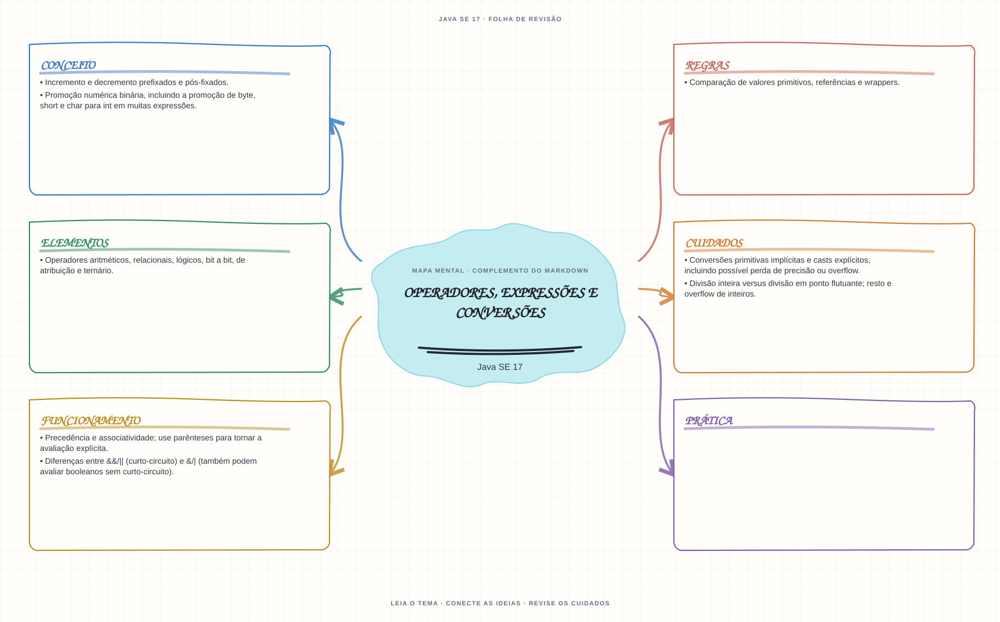

Ver mapa mental deste assuntoRastrear precedência, conversões e tipo resultante antes de calcular o valor de uma expressão.
Primeiro contato: aprenda o conceito e pratique antes de consultar os detalhes de prova. Voltar aos fundamentos se algum termo ainda for novo.
- Leia o objetivo e localize a ideia principal no conteúdo abaixo.
- Preveja o resultado, compile e execute o exemplo.
- Faça a atividade sem copiar a solução e confira a checagem comentada.
EXEMPLO DE CONSOLE
Veja a regra em execução
Antes de executar, anote sua previsão. Compile o exemplo com o JDK e compare a saída observada com as regras deste assunto.
Comandos para compilar e executar
javac -d target/bin src/01-valores-texto-e-datas/operadores-expressoes-e-conversoes/OperadoresExpressoesEConversoesExample.java
java -cp target/bin OperadoresExpressoesEConversoesExampleA execução imprime o resultado no console para você comparar com sua previsão.
Consultar código-fonte: OperadoresExpressoesEConversoesExample.java
public class OperadoresExpressoesEConversoesExample {
public static void main(String[] args) {
System.out.println("=== Operadores, expressoes e conversoes ===");
int divisaoInteira = 7 / 2;
double divisaoDecimal = 7 / 2.0;
int conversaoComPerda = (int) 9.8;
int contador = 0;
boolean resultadoCurtoCircuito = false && ++contador > 0;
int contadorAposCurtoCircuito = contador;
boolean resultadoSemCurtoCircuito = false & ++contador > 0;
System.out.println("7 / 2: " + divisaoInteira + " (divisao entre inteiros descarta a fracao).");
System.out.println("7 / 2.0: " + divisaoDecimal + " (double promove a expressao).");
System.out.println("(int) 9.8: " + conversaoComPerda + " (cast remove a parte fracionaria).");
System.out.println("false && ...: " + resultadoCurtoCircuito
+ "; contador continua " + contadorAposCurtoCircuito
+ " porque && nao avaliou o incremento.");
System.out.println("false & ...: " + resultadoSemCurtoCircuito
+ "; o incremento foi avaliado e contador agora vale " + contador + ".");
}
}
PRATIQUE AGORA
Faça uma pequena alteração por conta própria
Calcule o total de dois preços inteiros e mostre também o resultado de uma divisão inteira e de uma divisão decimal.
Concluído quando: o programa compilar, produzir o resultado esperado e você conseguir explicar a regra aplicada.
CHECAGEM RÁPIDA · Operadores, expressões e conversões
Qual é o tipo de byte + byte e por que a atribuição direta de volta a byte não compila?
Conferir resposta comentada
A promoção numérica binária converte ambos para int; o resultado é int e exige cast explícito para voltar a byte.
Estude
- Precedência e associatividade; use parênteses para tornar a avaliação explícita.
- Operadores aritméticos, relacionais, lógicos, bit a bit, de atribuição e ternário.
- Diferenças entre
&&/||(curto-circuito) e&/|(também podem avaliar booleanos sem curto-circuito). - Incremento e decremento prefixados e pós-fixados.
- Promoção numérica binária, incluindo a promoção de
byte,shortecharparaintem muitas expressões. - Conversões primitivas implícitas e casts explícitos, incluindo possível perda de precisão ou overflow.
- Divisão inteira versus divisão em ponto flutuante; resto e overflow de inteiros.
- Comparação de valores primitivos, referências e wrappers.
Prática
Monte expressões com casts, operadores prefixados/pós-fixados e curto-circuito. Para cada uma, anote a ordem de avaliação, o tipo de cada subexpressão e o resultado final.
Como este capítulo se relaciona com cada exame
Fundamentos reaproveitáveis; valide APIs e objetivos específicos de Java 8.
Base de estudo deste portal; confirme o mapeamento com o blueprint vigente.
Conceitos úteis; confira as APIs e mudanças de linguagem em Java 21.
Orientação editorial sobre reaproveitamento do material; não representa objetivos oficiais nem garante cobertura do exame. Consulte o comparativo e as fontes da Oracle.